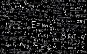

La ciencia es un sistema que organiza y ordena el conocimiento a través de preguntas comprobables y un método estructurado que estudia e interpreta los fenómenos naturales, sociales y artificiales.El conocimiento científico se obtiene mediante observación y experimentación en ámbitos específicos.
La ciencia considera y tiene como fundamento la observación experimental. Este tipo de observación se organiza por medio de métodos, modelos y teorías con el fin de generar nuevo conocimiento. Para ello se establecen previamente unos criterios de verdad y un método de investigación. La aplicación de esos métodos y conocimientos conduce a la generación de nuevos conocimientos en forma de predicciones concretas, cuantitativas y comprobables referidas a observaciones pasadas, presentes y futuras. Con frecuencia esas predicciones se pueden formular mediante razonamientos y estructurar como reglas o leyes generales, que dan cuenta del comportamiento de un sistema y predicen cómo actuará dicho sistema en determinadas circunstancias.
Las ciencias naturales buscan entender el funcionamiento del universo y el mundo que nos rodea. Se pueden distinguir cinco ramas principales: Física, Química, Astronomía, Geología y Biología.
| Ciencia de estudio | Area que aborda | Caracteristicas de la ciencia | |
|---|---|---|---|
| Biologia | La biología es la ciencia que estudia los procesos naturales de los organismos vivos, en diversos campos especializados. | La principal caracteristica de esta ciencia es que aborda temas caracteristicos de los reinos de la tierra tales como el animal y el vejetal, asi como el funcionamiento de los seres vivos | |
| Quimica | La química es la ciencia que estudia la composición, estructura y propiedades de la materia, así como los cambios que esta experimenta durante las reacciones químicas y su relación con la energía. | Aborda el estudio de las caracteristicas quimicas y compocision de la materia | |
| Fisica | La física es la ciencia natural que estudia los componentes fundamentales del Universo, la energía, la materia, el espacio-tiempo y las interacciones fundamentales. La física es una ciencia básica estrechamente vinculada con las matemáticas y la lógica en la formulación y cuantificación de sus principios. | La fisica busca la comprencion de los fenomenos de la tierra sin que esta cambie su composicion |  |
| Astronomia | La astronomía es la ciencia que estudia los cuerpos celestes del universo, incluidos los planetas y sus satélites, los cometas y meteoroides, las estrellas y la materia interestelar, los sistemas de materia oscura, gas y polvo llamados galaxias y los cúmulos de galaxias | En conceptos simples, la astronomia es el estudio de los astros y de su comportamiento | |
| Geologia | La geología es la ciencia natural que estudia la composición y estructura tanto interna como superficial del planeta Tierra, y los procesos por los cuales ha ido evolucionando a lo largo del tiempo geológico. | Estudia las caracteristicas del entorno, adentra conceptos de topografia, quimica y de fisica |
La implementacion de tablas para poder clasificar la informacion dentro de la pagina web, asi como el formato de esta definido en el archivo CSS son de gran ayuda para hacer una pagina web con un funcionamiento exelente y que tambien sirva para simplificar la codificacion de esta. Por otra parte tambien esta el uso de la funcion button para crear links que el usuario pueda recurrir en cualquier momento por si quiere mas informacion. Del lado de la informacion solo implementare el apartado de fisica, biologia y quimica porque son materias que ya estudie y se mas o menos la informacion que debe de ir en estas.